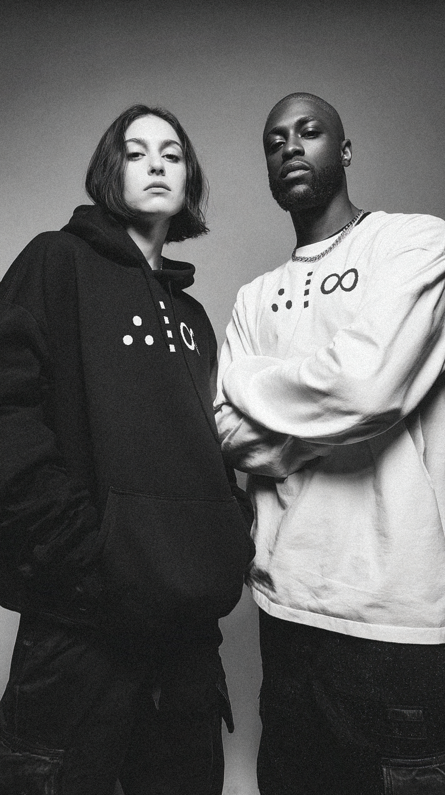
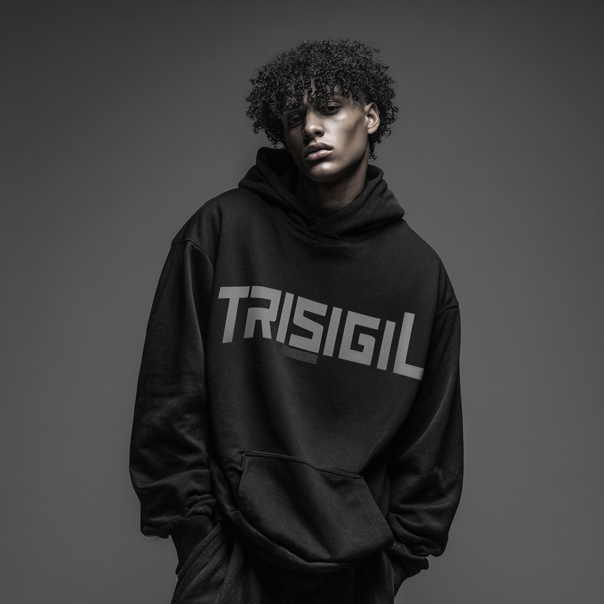
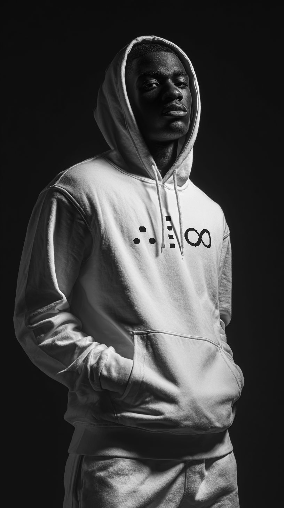
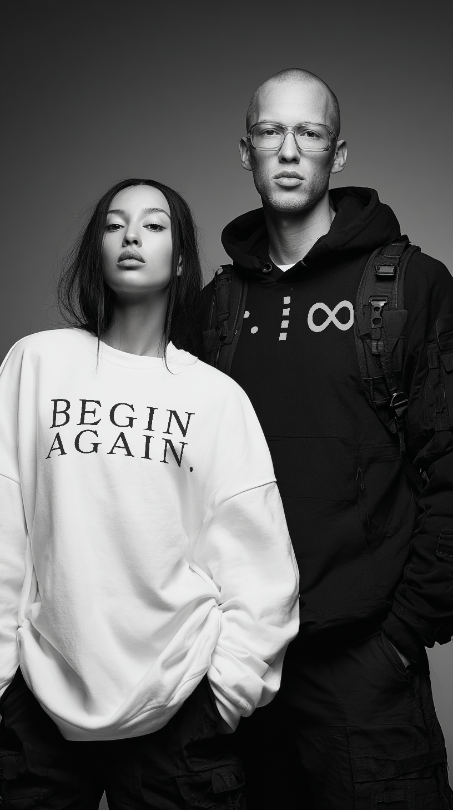

.jpg)
ATI
You don’t wear it to be seen. You wear it to stay coherent as you move through the field.

ALIGNMENT
Every journey starts with a decision, often quiet, sometimes desperate, always powerful. It’s the instant you refuse to stay where you are, the spark that puts you back into motion. In this moment, you align with clarity, mind, emotion, action, setting your signal into the field.

THRESHOLD
The threshold is the hurdle that tests your resolve. It’s the workout you don’t want to finish, the pitch you almost don’t send, the challenge that forces you to prove alignment. Crossing it requires a coherent mind, body, and intention moving as one.

INFINITY
This is the level unlocked. Momentum replaces hesitation, and what felt impossible now feels inevitable. Here, progress becomes self-sustaining. You carry the symbol not just as a mark of achievement, but as proof of an unstoppable trajectory.

BEGIN AGAIN
Every summit reveals another horizon. The journey doesn’t end, it evolves. You return to the start from a higher plane, equipped with experience and signal strength to take on the next recursion. And so, you begin again.